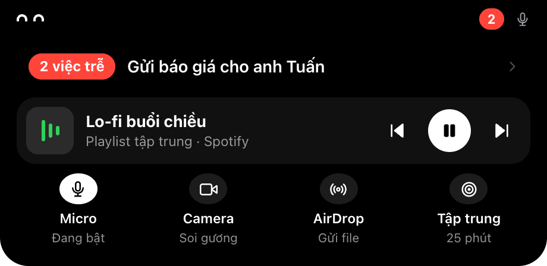
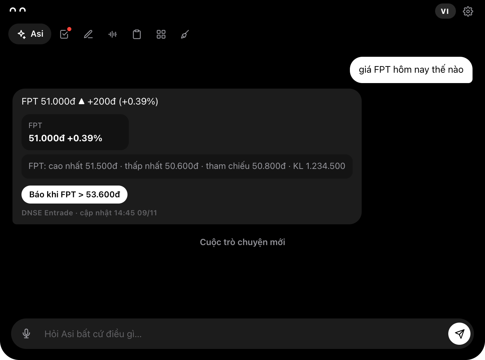
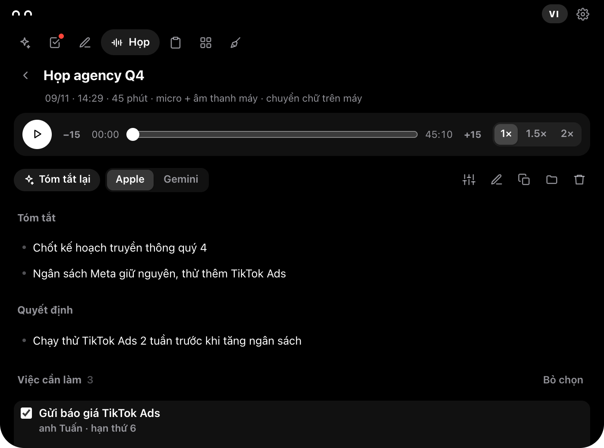
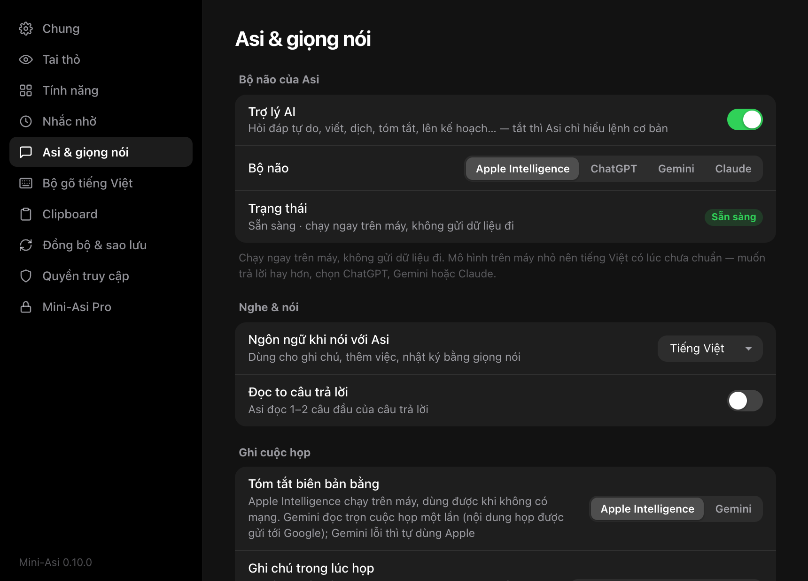

Tai thỏ MacBook, giờ biết làm việc.
Việc, họp, clipboard và AI nằm ngay dưới camera.
Miễn phí, macOS 13 trở lên, chip Apple và Intel.

Bấm vào, mở ra.
Một hòn đảo đen, mỗi tab một việc.

Họp xong, biên bản xong.
Ghi micro và âm thanh Zoom, Meet, Teams. Chuyển chữ tiếng Việt ngay trên máy.

- Nghe lại
- Bấm một dòng để phát đúng đoạn đó, 1×, 1,5× hoặc 2×.
- Việc cần làm
- Tick rồi thêm vào tab Việc, kèm người phụ trách và hạn.
- Chỉ trên máy
- Ghi âm nén m4a khoảng 14 MB mỗi giờ, không gửi đi đâu.
Bớt mở app, bớt chuyển cửa sổ.
| Bạn cần | Trước đây | Với Mini-Asi |
|---|---|---|
| Nhớ một việc | Mở Lời nhắc, chọn ngày, chọn giờ | Gõ một câu lên tai thỏ |
| Biên bản họp | Ghi tay trong lúc nghe | Bấm ghi, dừng, có tóm tắt |
| Dán lại số tài khoản | Tìm trong tin nhắn cũ | Mục ghim trong Clipboard |
| Gửi file sang iPhone | Mở Finder, chuột phải, Chia sẻ | Thả vào nửa trái tai thỏ |
Cần gì để chạy.
- Máy
- macOS 13 trở lên, chip Apple hoặc Intel. Máy không tai thỏ dùng tai thỏ ảo hoặc bong bóng.
- Bộ não
- Apple Intelligence trên macOS 26. Hoặc ChatGPT, Gemini, Claude bằng key của bạn.
- Giọng đọc
- Mai Phương hoặc Minh Quang, chạy trên máy, tải thêm khoảng 60 MB.
- Dữ liệu
- Lưu trong thư mục của app trên máy bạn. Sao lưu tuỳ chọn qua Google Drive hoặc iCloud.
Tải Mini-Asi.
Kéo vào Applications. Lần đầu mở: chuột phải, chọn Mở.
